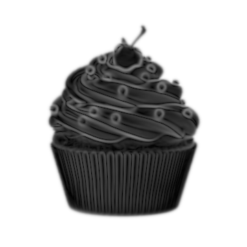
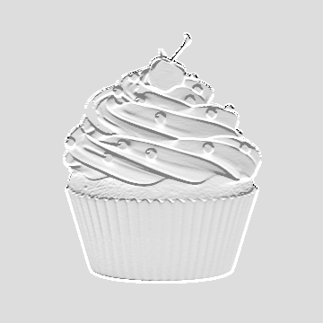

Detecção de Bordas
29 de setembro de 2026
Depois de estudar um pouco sobre filtros de imagem, deu pra perceber que vários deles funcionam seguindo praticamente a mesma ideia: pegar uma pequena região da imagem, analisar os pixels vizinhos e fazer alguma operação com eles.
No blur, por exemplo, queremos deixar as diferenças entre os pixels mais suaves. Mas se fizermos o contrário e procurarmos os lugares onde essas diferenças são maiores, encontramos uma borda!
O que é uma borda?
Em uma imagem em tons de cinza, cada pixel possui um valor de intensidade. Quanto mais próximo de 0, mais escuro ele é, e quanto mais próximo de 255, mais claro.
Por exemplo, temos os pixels: 20 22 24 230 235 240
Entre 20, 22 e 24 praticamente não aconteceu nada, mas de 24 pra 230 temos uma grande mudança. É aí que podemos supor que alguma coisa mudou na imagem nessa região.
Filtro de sobel
Uma das formas mais conhecidas de procurar essas mudanças é utilizando o operador de Sobel. Ele tenta descobrir o quanto os valores dos pixels estão mudando na imagem. Uma mudança grande no gradiente pode indicar uma borda.
Para isso, utilizamos duas matrizes 3 x 3, também chamadas de kernels ou máscaras.
O Gx observa principalmente mudanças de intensidade no eixo X (esquerda/direita), enquanto o Gy faz isso no eixo Y (cima/baixo). O Sobel utiliza os dois resultados para analisar as bordas da imagem.
Aqui, eu usei o GIMP para transformar nosso querido cupcake com a opção de filtro Sobel. Primeiro, a imagem foi passada para tons de cinza e desfocada com o blur Gaussiano, e depois apliquei o filtro.

O Sobel também utiliza convolução.
Pegamos uma região de 3 x 3 pixels da imagem e colocamos o kernel sobre ela. Depois, cada pixel é multiplicado pelo valor correspondente na matriz e todos os resultados são somados.Juntando Gx e Gy
Depois de calcular as mudanças nas duas direções, precisamos juntar os resultados. Uma maneira de calcular a magnitude do gradiente é: G = √(Gx² + Gy²)
Quanto maior for o valor de G, maior é a variação encontrada naquela região. Depois disso, esses valores podem ser convertidos novamente para valores de pixels.
As regiões com pouca variação ficam mais escuras e as regiões onde foram encontradas mudanças fortes aparecem mais claras.
Gx

Gy
O Gx e o Gy mostram partes diferentes da imagem, porque cada um procura variações em uma direção. Quando os dois são combinados, o resultado final consegue representar melhor os contornos do cupcake.
Antes do Sobel
Aqui, temos um problema: o algoritmo não sabe diferenciar uma borda de verdade de qualquer outra pequena variação na imagem, por exemplo, um ruído.
Por isso, é comum aplicar um blur antes de procurar as bordas. A documentação do GIMP inclusive recomenda que, em muitos casos, seja feito algum tipo de suavização antes dos filtros de borda para evitar essas bordas falsas.
Então o processo fica mais ou menos assim:
Imagem original
Imagem em tons de cinza
Imagem com blur Gaussiano
Imagem com filtro Sobel
Encontrar contornos pode ser uma etapa usada em tarefas maiores de processamento de imagens e visão computacional, porque ajuda a destacar formas e separar regiões da imagem.
O mais legal no Sobel é perceber que os conteúdos começam a se conectar: usamos tons de cinza, o blur e o Sobel, com objetivos completamente diferentes, e ainda assim eles funcionam bem juntos.